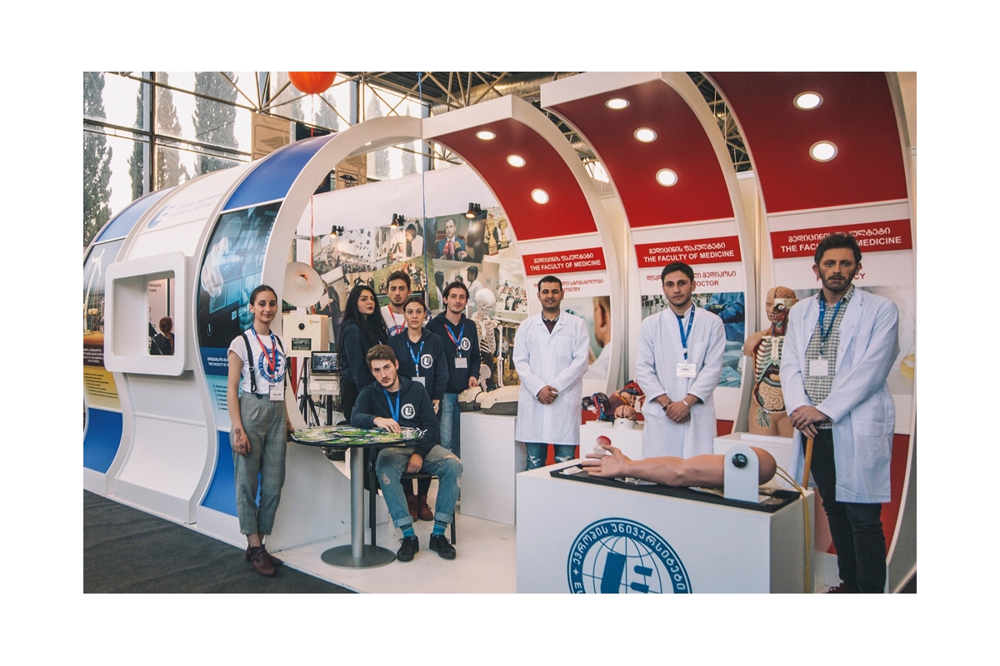

ევროპის უნივერსიტეტი არის ახალგაზრდა, მაგრამ მზარდი და განვითარებაზე ორიენტირებული, უმაღლესი საგანმანათლებლო დაწესებულება, რომელიც 2013 წლიდან ახორციელებს საქმიანობას. ამჟამად უნივერსიტეტი ფლობს ორ სასწავლო კორპუსსა და თანამედროვე საერთო საცხოვრებელს, რომელიც ემსახურება 500-მდე სტუდენტს.
უნივერსიტეტში ფუნქციონირებს ოთხი ფაკულტეტი:
- ბიზნესისა და ტექნოლოგიების ფაკულტეტი;
- სამართლის, ჰუმანიტარულ და სოციალურ მეცნიერებათა ფაკულტეტი;
- მედიცინის ფაკულტეტი;
- სავეტერინარო მედიცინის ფაკულტეტი.
ფაკულტეტების ფარგლებში ხორციელდება, როგორც ქართულენოვანი, ასევე ინგლისურენოვანი საგანმანათლებლო პროგრამები.
ევროპის უნივერსიტეტში ფუნქციონირებს ოთხი სამეცნიერო-კვლევითი ინსტიტუტი: სამართლის სამეცნიერო-კვლევითი ინსტიტუტი; გლობალიზაციის ეკონომიკური და სოციალური პრობლემების კვლევითი ინსტიტუტი; მედიცინის კვლევითი ინსტიტუტი და აკადემიკოს ანდრია აფაქიძის სახელობის არქეოლოგიის ინსტიტუტი. ინსტიტუტების ფარგლებში გამოიცემა საერთაშორისო რეფერირებადი ჟურნალები.
ევროპის უნივერსიტეტში შექმნილია ისტორიულ-არქეოლოგიური მუზეუმი, რომლის ფარგლებშიც აქტიურად ხორციელდება ექსპედიციები.
ევროპის უნივერსიტეტი არის ევროპულ ღირებულებებზე ორიენტირებული საგანმანათლებლო დაწესებულება, რომელსაც მჭიდრო თანამშრომლობა აქვს 40 მდე უცხოურ უნივერსიტეტთან. აღნიშნული საერთაშორისო პარტნიორობის ფარგლებში სტუდენტებს შესაძლებლობა აქვთ ისარგებლონ გაცვლითი პროგრამებით და მათთვის სასურველ უნივერსიტეტში გააგრძელონ განათლების მიღება.
ევროპის უნივერსიტეტი არის ერასმუს+ ჟან მონეს აქტივობების ორგზის გამარჯვებული და წარმატებით ახორციელებს ევროკავშირის მიერ დაფინანსებულ პროექტებს.
ევროპის უნივერსიტეტი გამოირჩევა აქტიური სტუდენტური ცხოვრებით, სტუდენტთა ინიციატივით შექმნილია სპორტული გუნდები და ანსამბლები.
გარდა იმისა, რომ ევროპის უნივერსიტეტი ორიენტირებულია ხარისხიანი და ევროპული განათლების მიცემაზე, სტუდენტთა და კურსდამთავრებულთა მომსახურების ცენტრი პარტნიორი ორგანიზაციების მხარდაჭერით ზრუნავს სტუდენტებისა და კურსდამთავრებულების დასაქმებასა და სტაჟირებაზე.
